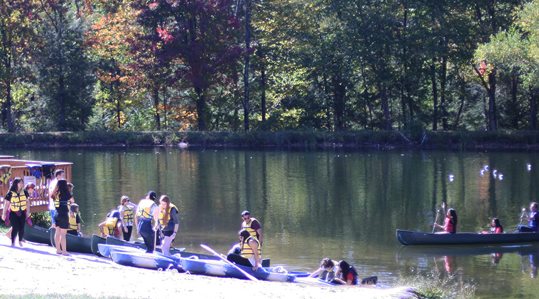

A BALR retreat member places a "warm and fuzzy," a small note of compliments or recognition, into another member's mailbox

Anthony Ynami, President of the Brooklyn Halls (T.A.C.O.), participates in friendly competition with IRHC members on the soccer field.

BALR participants take a break and enjoy canoeing on the lake.
Previous
Next
The Big Apple Leadership Retreat (BALR)
The Big Apple Leadership Retreat (BALR) is an two-day training and camping excursion to Upstate New York for NYU IRHC members to develop their leadership skills. This conference is in conjunction with the NRHH and the Violet Leadership Institute.
Flurry! is an event that has been organized by IRHC for NYU students for over five years. Flurry! offers IRHC members an opportunity to volunteer as line attendants, greeters, and station workers, helping to make the event a remarkable one. It gives students some solace from the stress of midterms.
This event is the highlight of the winter season for many of NYU students.Students are transported by double decker tour bus to Central Park where they skate at Wollman Rink, which is rented out for NYU students only. The tour bus route also goes through Time Square allowing attendees to see the beautiful cityscape lit up by stores and advertisements. While at the event, students can skate the night away with friends. There is a stand where students can buy refreshments like hot chocolate to help stay warm.
If you are interested in attending the retreat, but not the President or Director of Training and Development at your hall, please contact the IRHC President (president@nyuirhc.org) for more information.
- Sleeping Bag
- Water Bottle
- Layered Clothing
- Flashlight
- Sunblock
- Comfortable Shoes
- Toiletries (Shampoo, Soap, Toothbrush, etc.)
- Towel
- Leave Non-Essential Valuables at Home (Computers, iPads, etc.)
Bring your NYU ID for entry and RSVP to the Flurry! Facebook Event.